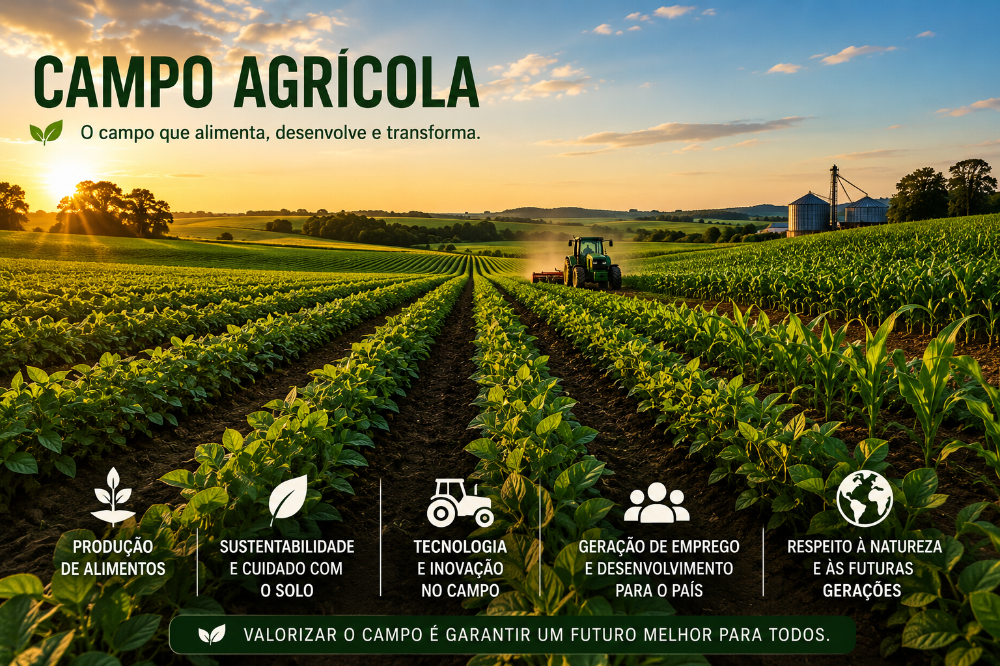
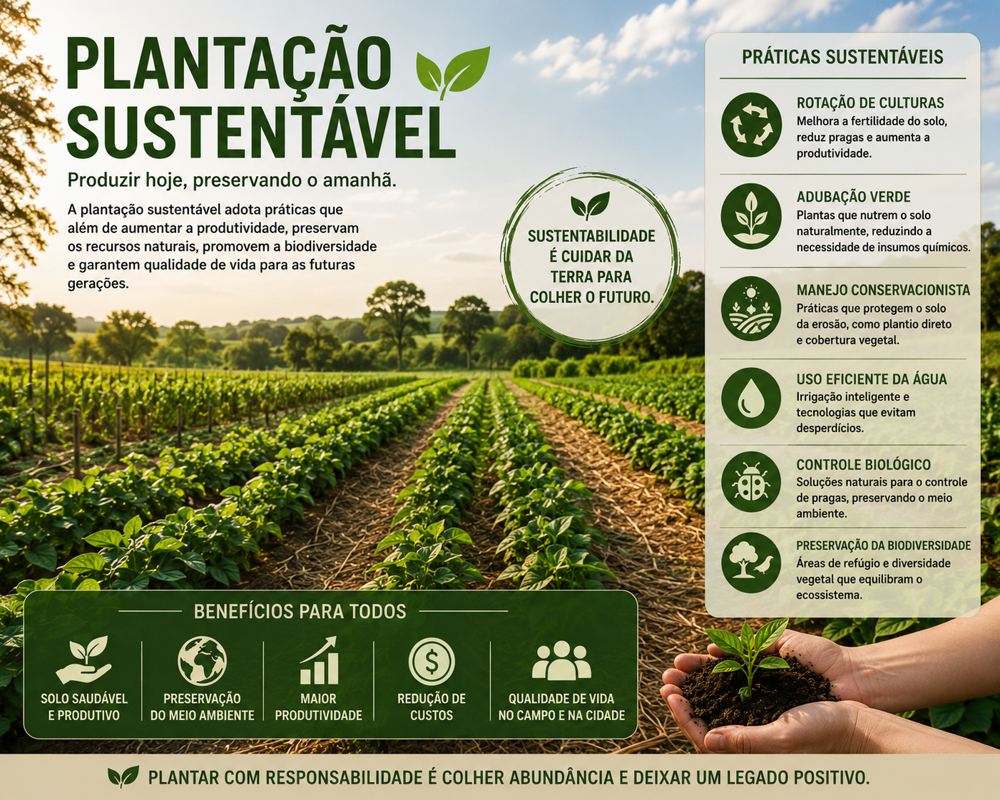
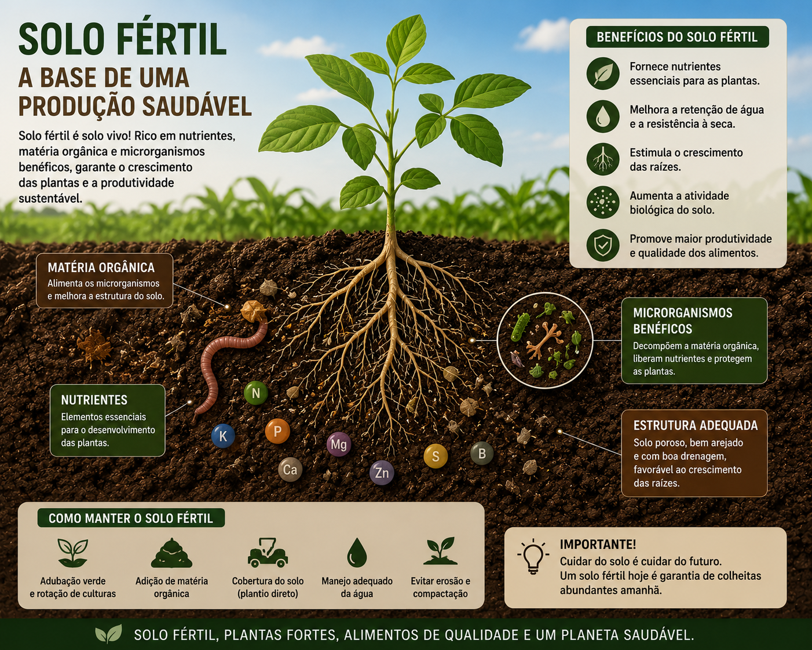

O que é Alelopatia?
Interação química entre plantas através de substâncias liberadas no solo ou no ar, podendo estimular ou inibir o crescimento de outras plantas.

Agronomia & Sustentabilidade
Fenômeno natural onde plantas liberam substâncias químicas que influenciam outras espécies.
ExplorarInteração química entre plantas através de substâncias liberadas no solo ou no ar, podendo estimular ou inibir o crescimento de outras plantas.
Reduz ervas daninhas sem agrotóxicos.
Melhora o equilíbrio biológico do solo.
Agricultura mais ecológica e eficiente.



Desenvolvimento do projeto